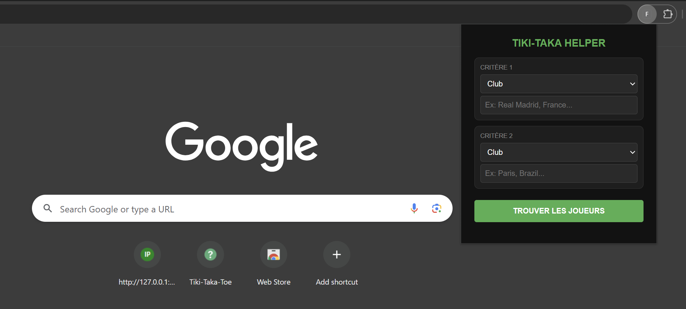

Le Concept
L'objectif était de créer un solveur intelligent pour le jeu Tiki Taka Toe, capable de croiser des milliers de carrières de joueurs en temps réel. Le projet met en œuvre des problématiques de Data Matching et d'optimisation de requêtes côté client.

Réalisation
- Pipeline ETL : Extraction et nettoyage de données sportives (Python/Pandas) pour créer une base de référence unique.
- Optimisation de la Data : Structuration du dataset en JSON compressé pour permettre des recherches instantanées sans serveur (Zero-Latency).
- Interface : Développement d'une extension Chrome capable d'analyser dynamiquement le contenu des pages web pour injecter des suggestions pertinentes.
- Algorithmique : Calcul d'un indice de rareté pour optimiser le score de l'utilisateur final.